Description and usage of graphs
Top
Graphs: Configuration
To configure a new graph, click on 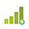 button.
-
Select one or more datasets to plot;
A single dataset on the left Y axis:
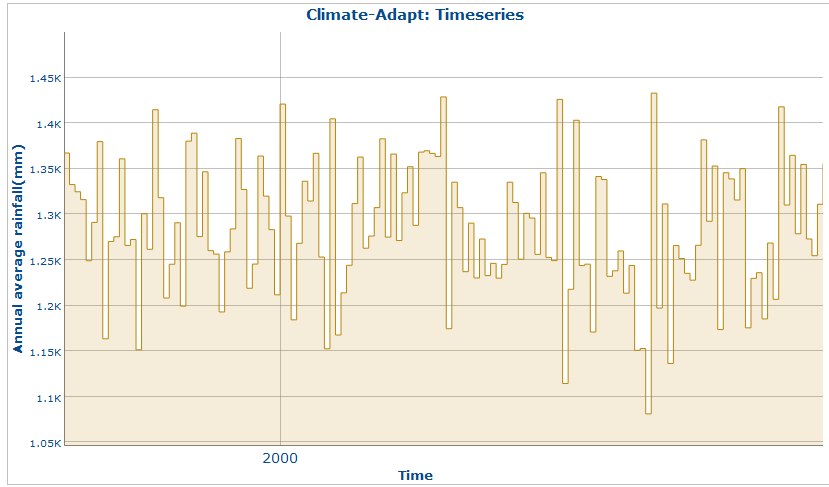
|
More datasets on the left Y axis:
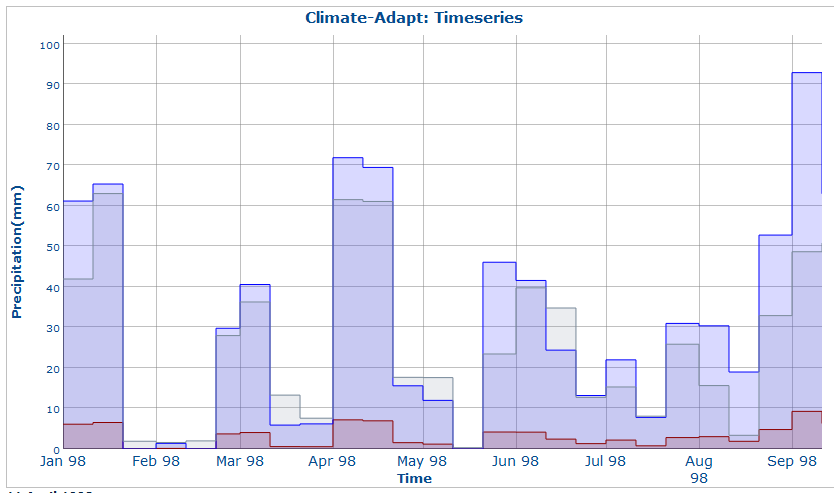
|
More datasets on both left and right Y axes:
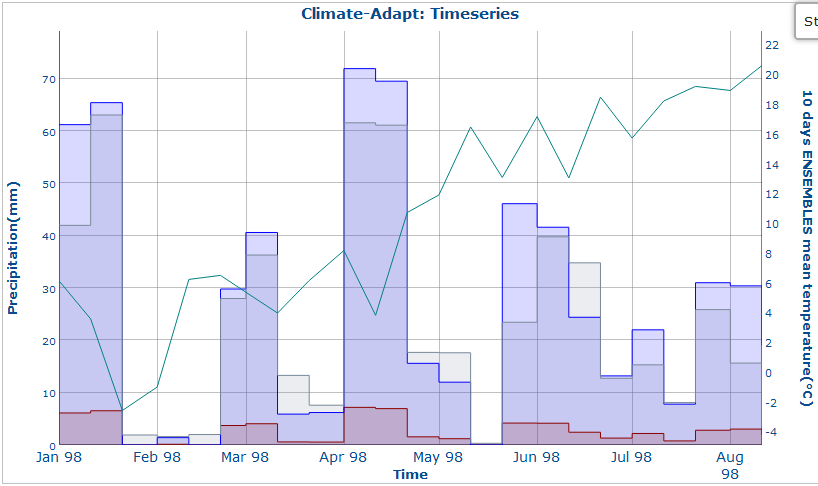
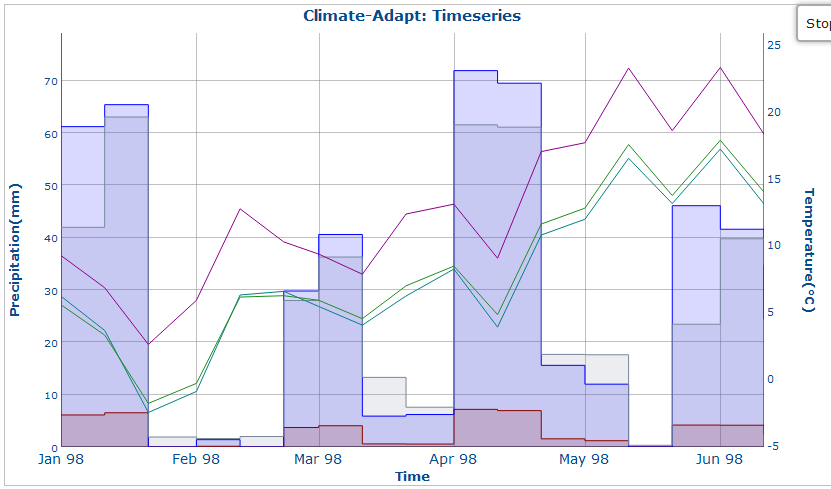
|
Select a date interval;
Choose whether to display the uncertainty or not;
Top
Graphs: Dataset selection
Select from the list on the left-hand side, a valid "Climate Indicator" to load all available datasets:
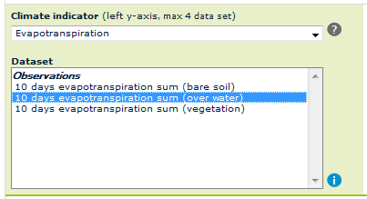
Use the Ctrl and Shift keys as follows:
-
Ctrl key: to select / deselect "non-consecutive" elements;
-
Shift key: to select / deselect "consecutive" elements;
Click on the Information button to open a dialog box that provides more information about all datasets selected:
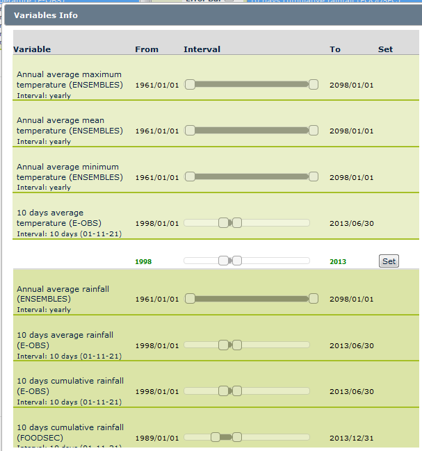
The system will suggest a common date combination (in green) in order to plot values available over the valid range for all datasets selected. Click on the Set button to define the "From date" and "To date" over the Graph Dialog box. Below is an example when a common date range is not found (in red):
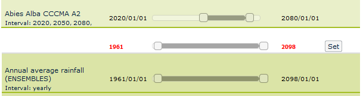
As default, the "From date" and "To date" fields are pre-defined with the minimum and maximum dates of all datasets selected. Note that this may result in an additional increase of graph creation time, due to date intervals that are not consistent.
Top
Graphs: Date selection
After dataset selection, configure the date interval. Click on the Date Input text-box to open an interactive calendar and select a valid date either by clicking or writing directly in the textbox (format: "dd/mm/yyyy").

Click on the arrows to facilitate navigation through large timeframes. Click on the information button to see more details about datasets. As already mentioned, when a dataset has been selected, the "From date" and "To date" are automatically pre-defined with the minimum and maximum available dates of the selected layer.
Top
Graphs: Error bar
In order to visualize the "uncertainty" inherent in the graph, click on the dedicated check-box 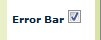:
Standard Deviation:
Shows the variation of the layer. When available, for a point, box or geographical area.
|
Spatial Deviation:
Shows the calculated spatial deviation for the layer. Available only for box and geographical area.
|
|
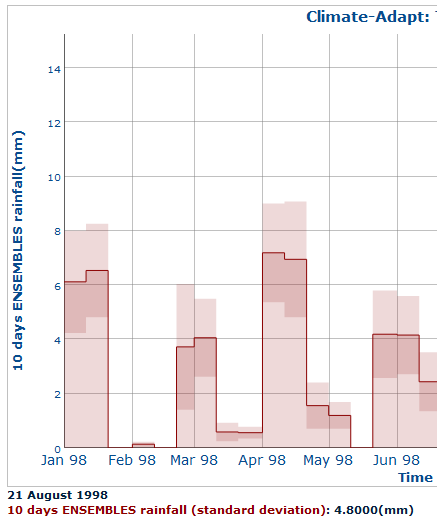
|
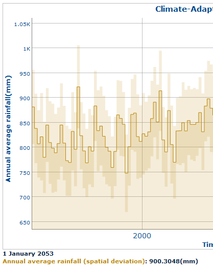
|
Top
Graphs: Example of output
Below are some examples of output graphs from the Climate ADAPT Time Series Tool:
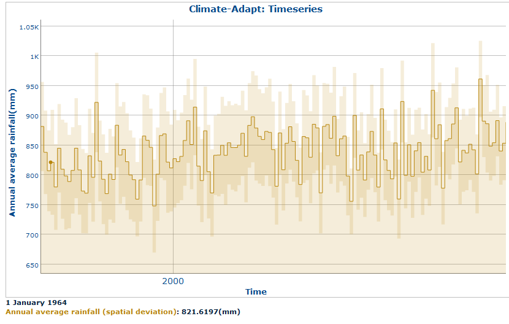
The time series graph is interactive: move the mouse over each point to read the corresponding date / value on the legend field below the graph.
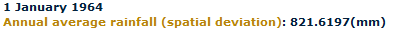
Example of graph with a single dataset on the left axis for different dates:
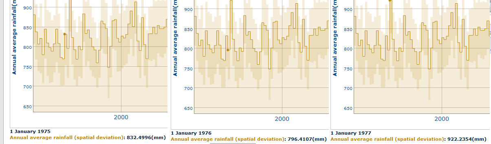
Example of graph with more datasets on the left axis:
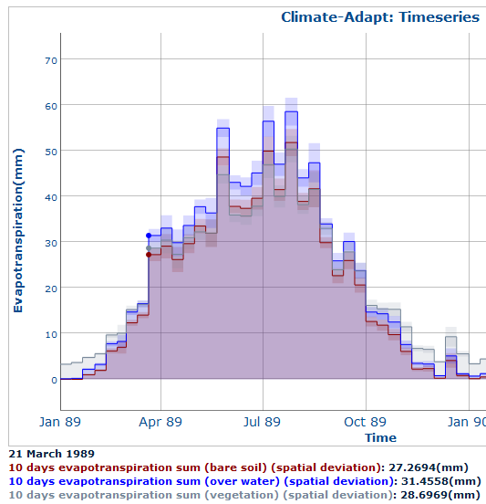
Top
Graphs: Types
Below are some examples of the different types of graphs that are available:
-
Line-bar graph:
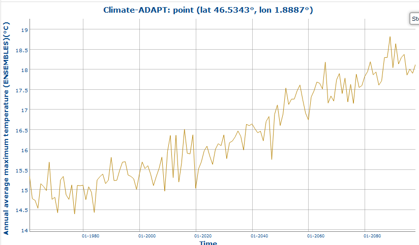
-
Vertical bar graph:
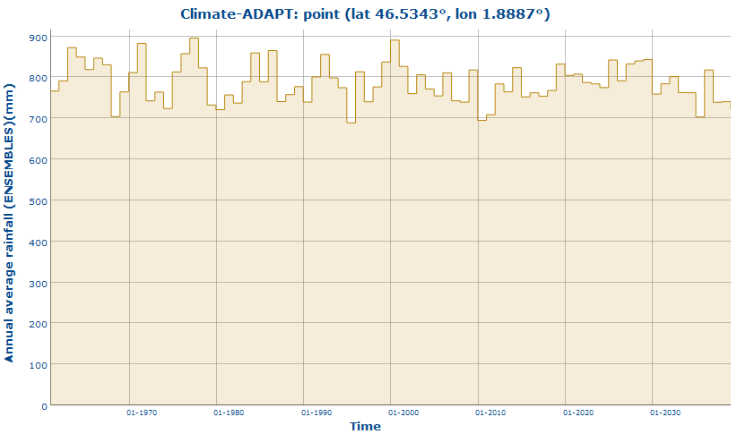
-
Step chart graph:
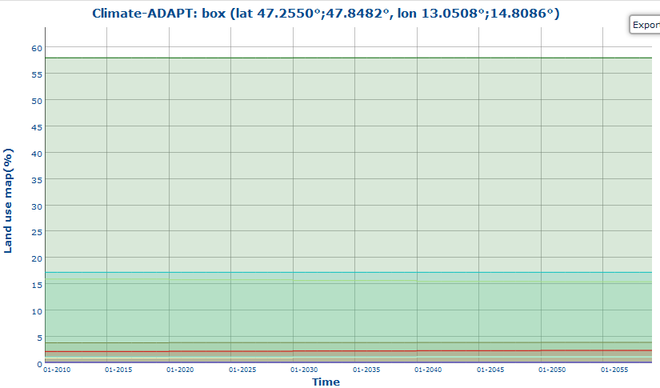
-
Logarithmic scale:
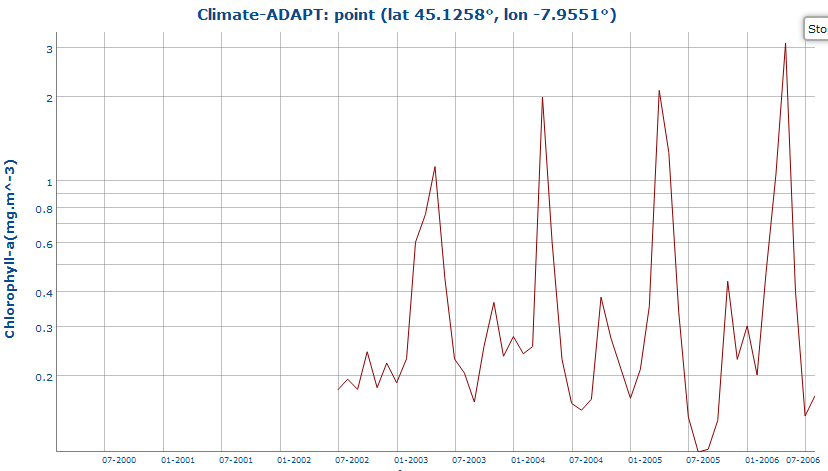
Top
Graph: Refresh/Stop functionality
After clicking on the graph button in order to start the graph production, these following buttons
(or these below the graph image 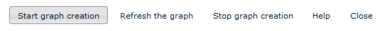)
are available to:
- Graph the graph creation;
To start the graph creation;
- Stop the graph creation;
For example, if an error occurs during the input parameter selection or if it is not possible to read the information returned on the graph: click on stop button to stop the creation of the graph. This functionality will stop the graph creation. Re-click on graph button to reactivate.
- Refresh the graph;
The graph is automatically refreshed every 3 seconds. Click on this button to refresh the graph and show results in real time. These buttons will be disabled after each graph creation.
Grey images when the selection is disabled.
Top
Graphs: Minimum and maximum axis values
During graph creation, or when it is completed, the user can change or set the minimum and maximum values for the left and right axes.
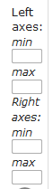
Y1 (left y-axis): 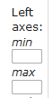
Y2 (right y-axis): 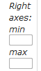
Example:
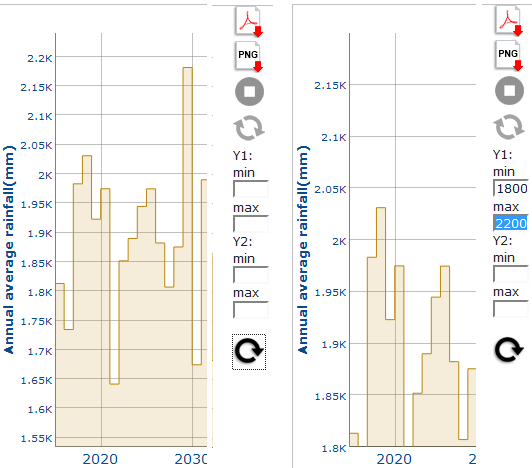
Top
Graphs: Zoom In/Out
Click-and-drag with the mouse to zoom over a specific area in both directions (original, zoom over X axis, zoom over Y axis):
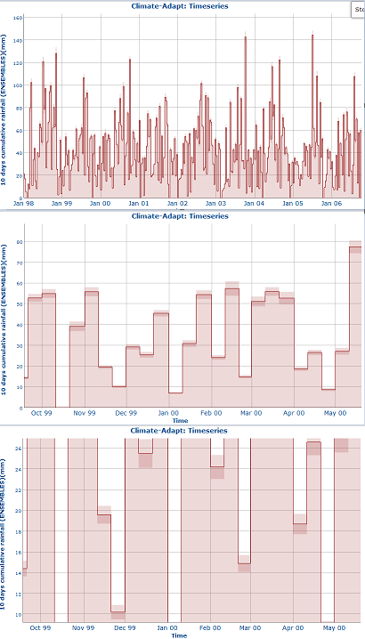
Double-click over the graph to return to the original size.
Top
Graphs: Export
To export the graph as PDF, click on the button below. The system will open a popup page with a PDF document as shown below:
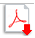
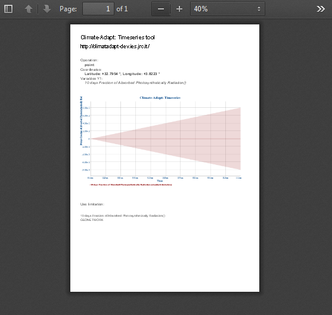
To export the graph as PNG, click on the button below. The system will open a popup page with a PNG image as shown below:
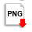
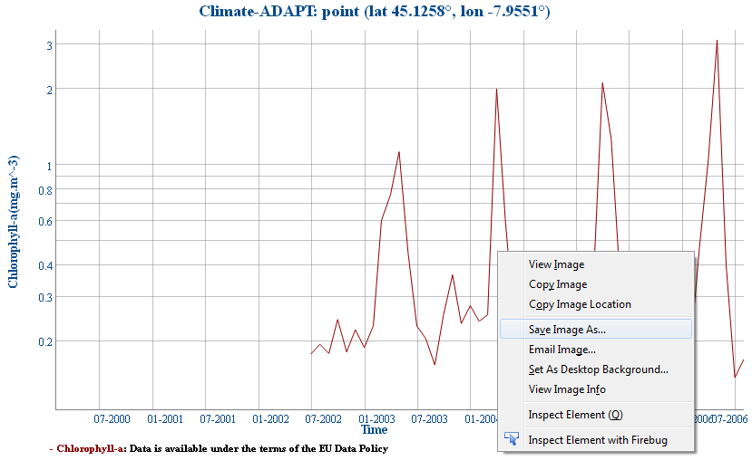
Right click to save the graph.